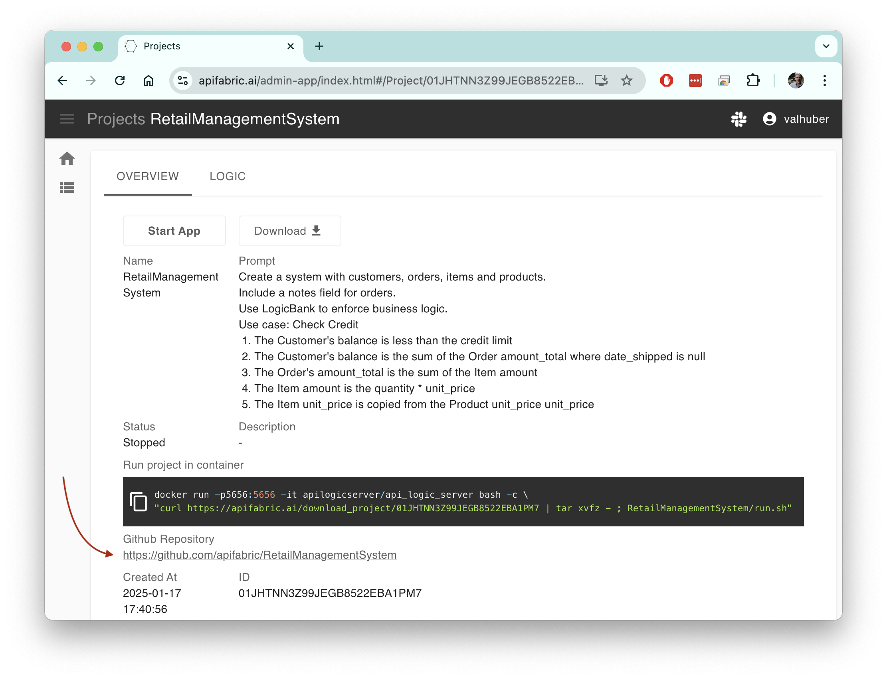
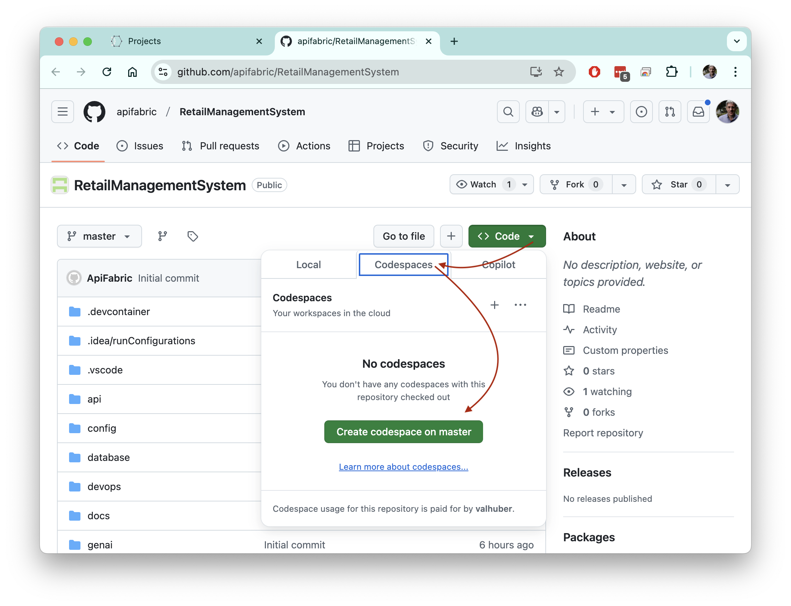
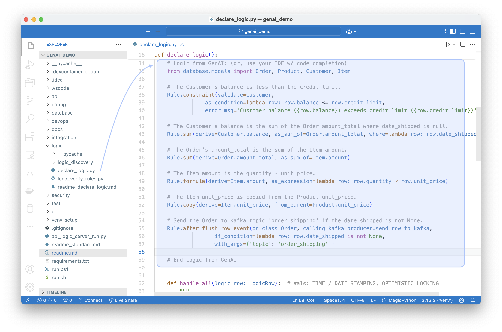
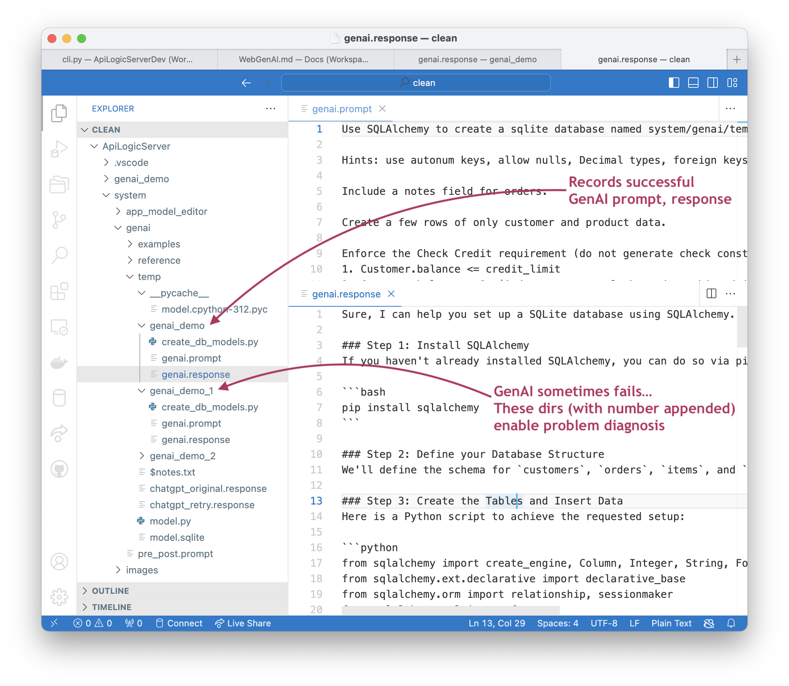
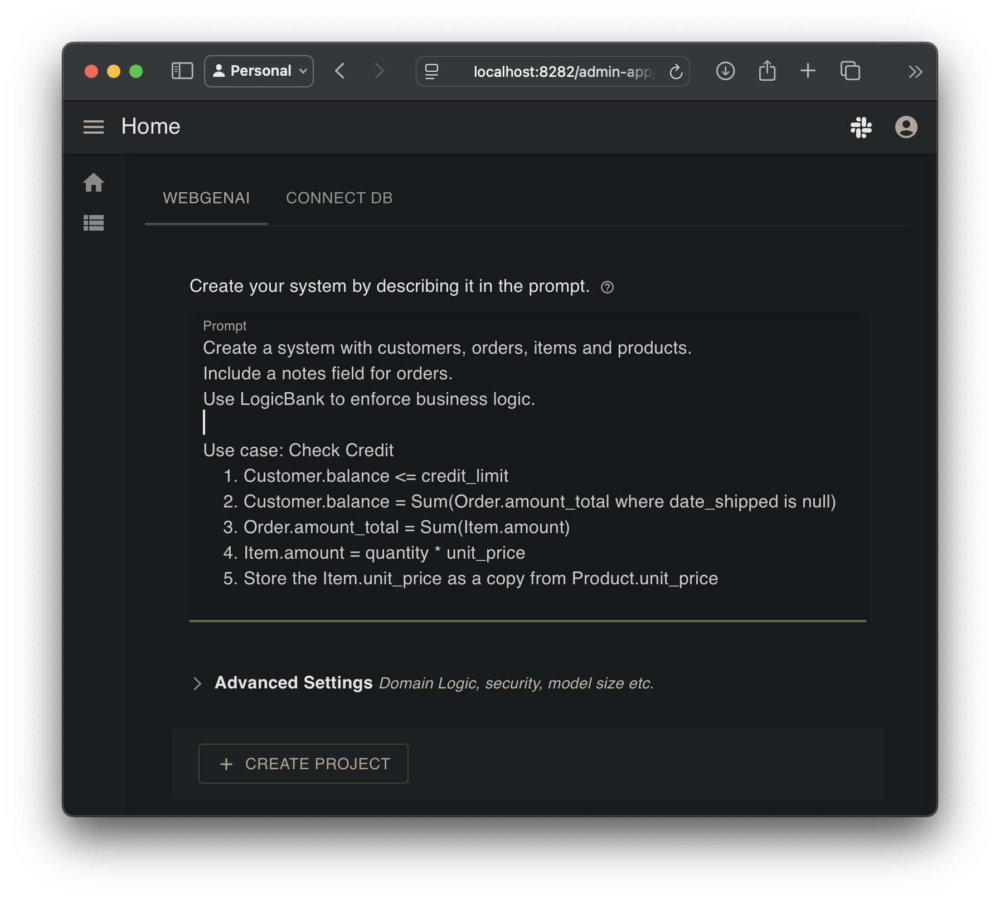

Sample
 TL;DR - GenAI leverages AI and Microservice Automation for project creation
TL;DR - GenAI leverages AI and Microservice Automation for project creation
To create projects (either the WebGenAI web app, or API Logic Server CLI), the system performs the following:
-
Uses ChatGPT APIs to submit prompts and obtain data model class responses
-
It then uses these to create a database and project
This document presumes you have already created the project, and are using VSCode or GitHub to explore it. It illustrates how to run and customize the genai_demo project.
Note: if you have not already created the project, see the Appendix ("Creating GenAI Demo").
Setup Codespaces
Codespaces enables you to run in the cloud: VSCode via your Browser, courtesy GitHub. You can use codespaces on your GenAI project:
1. Open your project on GitHub

2. Open it in Codespaces (takes a minute or 2):

You will now see your project - running in VSCode, in the Browser. But that's just what you see...
Behind the scenes, Codespaces has requisitioned a cloud machine, and loaded your project - with a complete development environment - Python, your dependencies, git, etc.
You are attached to this machine in your Browser, running VSCode.
Pretty remarkable.
3. Start the Server and open the App in the Browser
- Use the pre-defined Launch Configuration

We think you'll find Codespaces pretty amazing - check it out!
How was the project created?
Your prompt (whether provided in a file to the CLI, or the WebGenAI website) is sent to ChatGPT to create a schema. This schema is then processed by als to create and run a project that provides a JSON:API, a Web App, a database, and business logic that runs in the API.
For more information, Appendix ("how does it work"). For more information on the architecture, please see: https://www.genai-logic.com/architecture.
Let's have a look at the created project.
1. API/App Automation
API/App Automation means the created project is executable. To run:
- Press F5 to run
- Start your Browser (use the codespaces button, or locally: http://localhost:5656/) to view:
- App Automation: the Admin App, and
- API Automation: JSON:API, with Swagger
- Stop the server when you are done (red box on VSCode Debugger panel)

It's a modern, 3-tiered architecture, using standard Python libraries. For more information, see slide 2: https://www.genai-logic.com/architecture.
2. Customize: Rules and Python
The development environment is also standard: your IDE, standard languages, standard libraries, standard source control, etc. You customize API Logic Project in two ways, both performed in your IDE:
-
Logic Automation: declare spreadsheet-like rules to address multi-table derivations and constraints. These constitute nearly half of a typical database-oriented system. Declarative rules are 40X more concise than procedural code.
-
Standard Python: e.g, to create a new custom endpoint, and send a Kafka message
Note: projects are model-driven, resulting in a very small amount of code. This simplifies debugging and customizing your system.
Explore rules and Python customization below.
Logic Automation
The project creation provided natural language logic. This is translated into rules (vs. lots of code) expressed in Python. To explore rules created from your prompt:
-
Open
logic/declare_logic.py -
View the Python-based rules created by GenAI. Observe you
You can add more rules, with Python (code completion), and/or GenAI.

Standard Python, Libraries
To save time, issue the follow command to simulate changes you might make in your IDE, e.g., to create a new custom endpoint, and send a Kafka message.

The customization is this code in the diagram above:
# Sends the order to Kafka topic 'order_shipping' if the date shipped is not None.
Rule.after_flush_row_event(on_class=Order, calling=kafka_producer.send_row_to_kafka, if_condition=lambda row: row.date_shipped is not None, with_args={"topic": "order_shipping"})
Try it out
Set a breakpoint in the code above, and:
- Start the Server (F5)
- Use the Admin app to alter the first Customer, first Order, first Item, and change the quantity to 11111
- Observe the error message, from the rules.
- To test the new endpoint, use Swagger (ServicesEndPoint > POST /ServicesEndPoint/OrderB2B).
- Observe the swagger response - "Sending Order to Shipping sends:".
Note: Kafka is not activated in this example. To explore a running Tutorial for application integration with running Kafka, see: https://apilogicserver.github.io/Docs/Sample-Integration.
3. Deployment: Containers, Cloud
One of the best ways to de-risk projects is to verify the sponsors are in sync with what is happening. This is best addressed with working software, which often occurs late in project development. Surprises here can result in considerable rework... and frustrations.
GenAI Automation produces working software, now, so you can find misunderstandings before investing serious effort ("fail fast"). To expose the working software, it's often desirable to deploy to the cloud so business users can run it.
API Logic Server creates the devops directory, which scripts to containerize your project, and deploy it to Azure. For more information, see DevOps Automation: https://apilogicserver.github.io/Docs/DevOps-Automation/.
Appendices
GenAI Restart Procedures
AI results are not consistent, so the created model file may need corrections. You can find it at system/genai/temp/model.py. You can correct the model file, and then run:
Or, correct the chatgpt response in system/genai/temp/genai_demo<your project>response.json, and
Diagnosis Tips
The system saves files used for creation:

Note there are multiple diagnostic directories. recall GenAI results are not always predictable, so we make 3 attempts to get a successful result. This is often enough, but examining the failures can be useful.
A good technique is to:
- Open the response file in the Manager, and
- Use your IDE to run the file
It's usage create the sqlite database, but running it in this mode can provide more insight into causes.
If you are using Web/GenAI (see: https://apilogicserver.github.io/Docs/WebGenAI/), project files are always under /projects/gen_$ID.
Creating genai_demo
Using WebGenAI

View the process in this video: https://www.youtube.com/watch?v=7I33Fa9Ulos
Using the ALS CLI
View: https://www.youtube.com/watch?v=LSh7mqGiT0k&t=5s.
To create a microservice, identify an existing database, or provide a natural language "prompt" description.
You can explore genai_demo using the Manager https://apilogicserver.github.io/Docs/Manager/. Optionally, you can sign-up for ChatGPT API and Copilot, or simulate the process as described below.
- If you have signed up for ChatGPT API and Copilot, this command will create and open a project called
genai_demofromsystem/genai/examples/genai_demo/genai_demo.prompt:
- Or, if you have not signed up, you can simulate the process using a pre-installed response file:
Here is the system/genai/examples/genai_demo/genai_demo.prompt file:
TL;DR - GenAI Prompt
Create a system with customers, orders, items and products.
Include a notes field for orders.
Use LogicBank to enforce business logic.
Use case: Check Credit 1. The Customer's balance is less than the credit limit 2. The Customer's balance is the sum of the Order amount_total where date_shipped is null 3. The Order's amount_total is the sum of the Item amount 4. The Item amount is the quantity * unit_price 5. The Item unit_price is copied from the Product unit_price
Ensure each customer has a unique name.
Ensure each Item quantity is not null.
Ensure each order has a valid customer_id that exists in the Customer table.
How does it work
When you use the WebGenAI website, it captures your prompt, and submits to the als system
using its provided CLI (als genai').genai` processing is shown below (internal steps denoted in grey):
-
You create your.prompt file, and invoke
als genai --using=your.prompt. genai then creates your database and project as follows:a. Submits your prompt to the
ChatGPT APIb. Writes the response to file (
system/genai/temp/response.json), so you can correct and retry if anything goes wrongc. Extracts
system/genai/temp/create_db_models.pyfrom the responsed. Invokes
als create-from-model, which creates the database and your project -
Your created project is opened in your IDE, ready to execute and customize.

GenAI Using Postgresql
The above examples use sqlite, since it requires no install. The GenAI process works for other database, such as Postgresql.
You can test this as follows:
- Use our docker image: https://apilogicserver.github.io/Docs/Database-Docker/
- And:
als create --project-name=genai_demo_pg.prompt --db-url=postgresql://postgres:p@localhost/genai_demo
Provisos:
- You have to create the database first